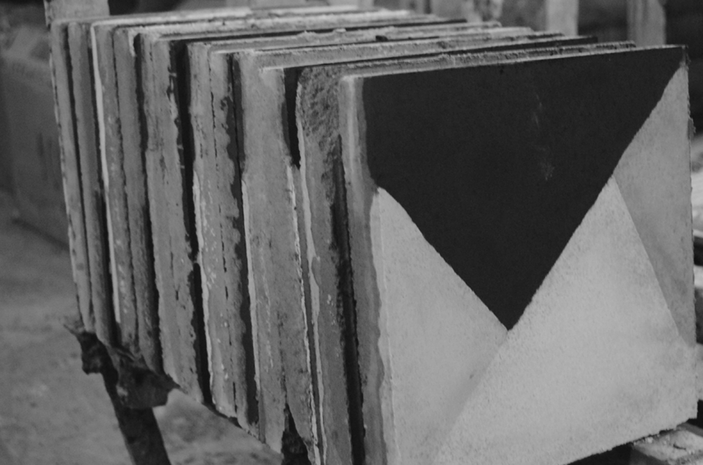
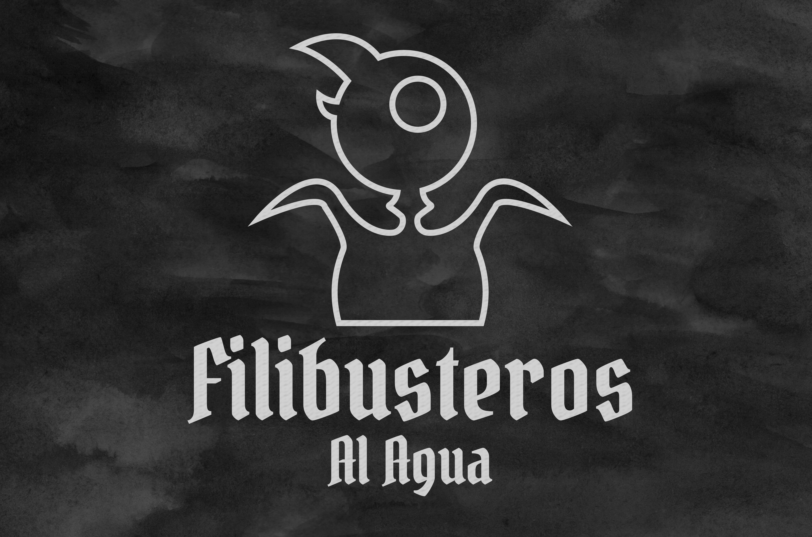

Proyectos de Diseño
A continuación se muestran tres proyectos en los que participé relacionados al Diseño Gráfico y de Interacción. Cada uno de ellos fueron realizados como proyectos en la Escuela de Arquitectura y Diseño, PUCV.
Lazo del Cobijo
Proyecto Diseño Interacción [4to Año]

A partir del texto "Hypnerotomachia Poliphili" se originó una manera de ver el amor y se propuso un módulo interactivo que funcionase a través de un sensor de movimiento y que tenga momentos de lectura para el espectador. Aquí la interacción toma un papel relevante en el Diseño y se no se piensa solamente en cómo se verá, sino que se tienen previstos el comportamiento humano para generar la experiencia.
Más Información en Wiki Casiopea e[ad]
Baldosas
Proyecto Hacer Visible [2do Año]

Se diseñaron signos como gráfica para utilizarlas en la creación de baldosas, para eso se trabajó con la fábrica más antigua de Valparaíso, "El Sol Collado". El proyecto abarcó desde la fabricación de matrices, hasta la confección misma de las baldosas.
Más Información en Wiki Casiopea e[ad]
Filibusteros al Agua
Proyecto Diseño Interacción [4to Año]

Creación de un juego de mesa desde la visión del Diseño de Interacción, se propone un juego basado en el mundo pirata, donde haya falta una falta de información que haga dudar a los jugadores y así se genere el conflicto y se genere un flujo de juego, como motor del proceso lúdico.
Más Información en Wiki Casiopea e[ad]